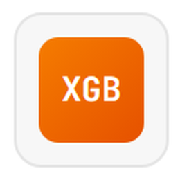

CronosVEJA ANTES · AJA ANTESTemplate · slide 11
Tecnologias utilizadas


A stack que faz o Cronos funcionar
As doze ferramentas em uso e o que cada uma resolve.
PythonBase3.13
Uma linguagem só, do arquivo bruto até a tela do gestor.
ProphetModelos1.3.0
Prevê o volume diário de D+1 a D+7, nas duas prioridades.
pandasDados2.2.3
Aplica a régua de elegibilidade e monta as características de calendário.
sk
scikit-learnModelos1.6.1
Regressão logística do risco de violação por incidente.
xl
openpyxlDados3.1.5
Motor que abre o LW-DATASET.xlsx entregue pela Locaweb.

XGBoostModelos3.0.2
Baseline de comparação do modelo de risco.
pa
pyarrowDados25.0
Grava e lê os Parquet que a aplicação carrega no arranque.
plt
matplotlibAnálise3.10
Figuras dos notebooks, incluindo as que entram neste deck.
holidaysDados0.97
Feriado nacional, a única informação que vem de fora do dataset.
PlotlyAplicação6.0
Gráficos do painel, com leitura de valor no ponteiro.
DjangoAplicação6.1
Seis abas, cada uma com URL própria para enviar a alguém.
DockerEntregapython:3.13-slim
Roda na infraestrutura da Locaweb, sem provedor de nuvem amarrado.
Cronos · Super Data Bros · 2TSCOAChallenge FIAP 2026 com Locaweb